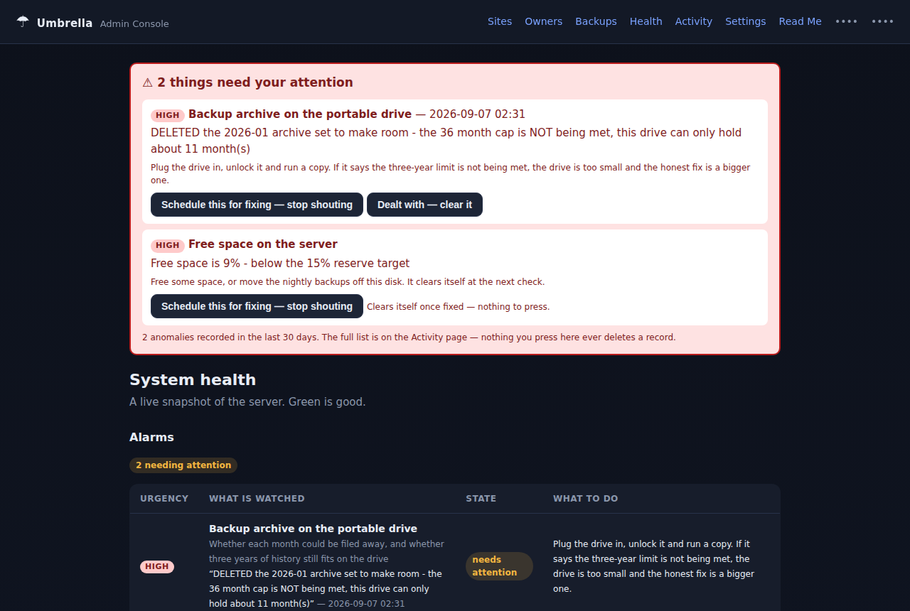
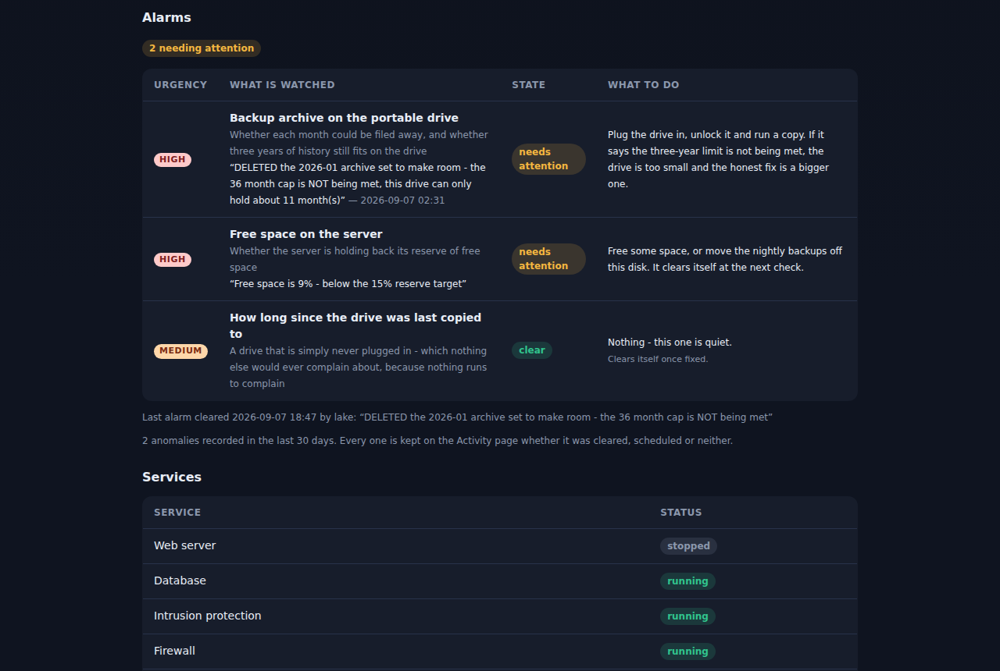
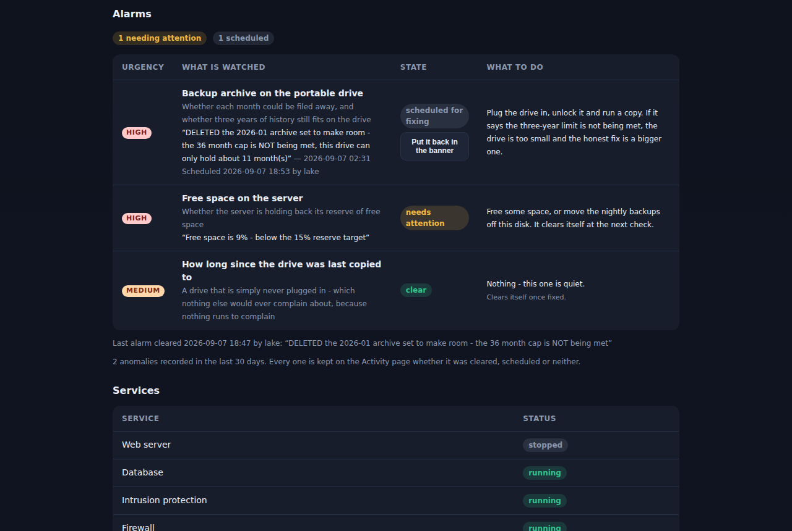
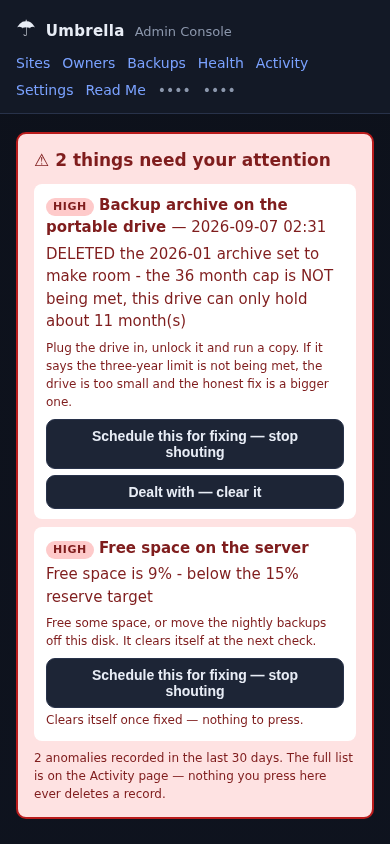
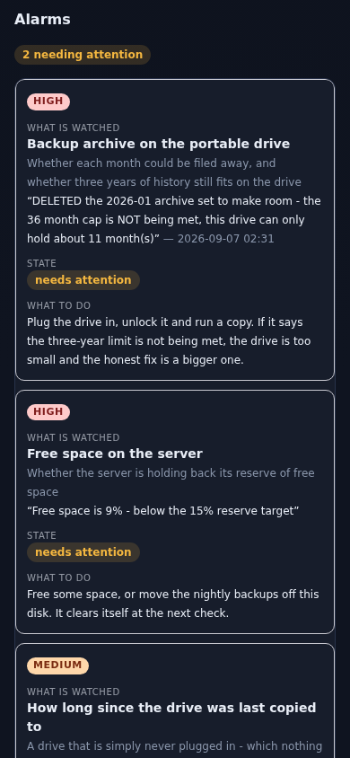

What it looks like, since the chat window will not show you the pictures.
The red banner sits on every admin page, not one you have to remember to visit. Worst thing first. Each alarm carries its urgency, what it actually said, when, and what to do about it.

Two alarms, both rated HIGH. The buttons are the two honest choices: put it on your list, or say it is dealt with.
This lists every check the server knows how to make, not just the ones going off. A page that only shows what is wrong cannot tell you the difference between “nothing is wrong” and “nothing is being watched”.

Third row is green and quiet — but it is still listed, so you know it is being watched.
The middle state. You have seen it, it is on your list, so it stops shouting — without pretending to be fixed. It leaves the banner and stays here with its urgency, the date and who scheduled it. Muted, never hidden.

If that alarm later says something different, it is a different problem and it starts shouting again.
Each alarm becomes its own card. No pinching, no sliding the page sideways.

